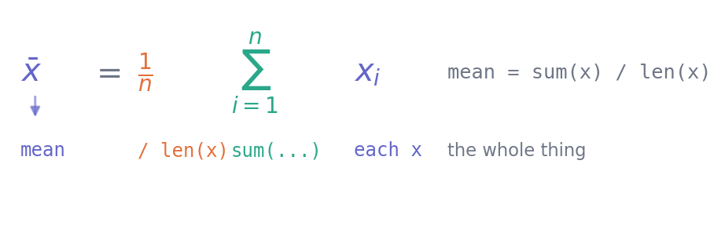

1. Reading mathematics
Mathematics · Unit 1
Why this unit is here
Most people who find mathematics hard do not find the ideas hard. They find the notation hard, and then never get to the ideas.
A formula is a compressed sentence. Once you can read it aloud and say what every symbol stands for, the rest is arithmetic you already know. This unit teaches the reading, and nothing else — there is no new mathematics in it at all.
Before you start
You should be able to rearrange something like \(2x + 3 = 11\), work with fractions, and read a pair of coordinates off a graph. That is genuinely all.
Quick check. Solve \(3x - 4 = 11\).
TipShow the answer
\(x = 5\). Add 4 to both sides to get \(3x = 15\), then divide both sides by 3.
If that felt slow rather than wrong, you will be fine — it comes back quickly. If it felt genuinely unfamiliar, spend an hour on a GCSE algebra refresher before going on, because everything after this assumes it.
The idea
Take a formula that will appear later in these notes:
\[ \bar{x} = \frac{1}{n}\sum_{i=1}^{n} x_i \]
It looks like four unfamiliar things. It is one familiar thing: add up all the values and divide by how many there are. It is the average.
Read it aloud, left to right:
- \(\bar{x}\) — “x bar”, a single number, the average of the \(x\) values.
- \(=\) — is defined to be.
- \(\frac{1}{n}\) — one over \(n\), where \(n\) is how many values there are.
- \(\sum\) — “sum”, meaning add up what follows.
- \(i = 1\) underneath and \(n\) on top — starting at the first value and going to the last.
- \(x_i\) — “x sub i”, the \(i\)-th value.
values = [68.4, 55.1, 72.0, 61.3]
mean = sum(values) / len(values)
print(mean)64.2The formula and the code say the same thing. Neither is the “real” version — they are two notations for one instruction, and being fluent in both is the point of this course.
The mechanics
Sets of numbers
| Symbol | Name | Means |
|---|---|---|
| \(\mathbb{N}\) | naturals | \(1, 2, 3, \ldots\) |
| \(\mathbb{Z}\) | integers | \(\ldots, -2, -1, 0, 1, 2, \ldots\) |
| \(\mathbb{R}\) | reals | every number on the line, including \(\pi\) and \(\sqrt2\) |
\(x \in \mathbb{R}\) reads “\(x\) is a real number”. The \(\in\) means “is in”.
Intervals
Round brackets exclude the endpoint; square brackets include it.
- \([0, 1]\) — from 0 to 1, including both.
- \((0, 1)\) — from 0 to 1, excluding both.
- \([0, 1)\) — includes 0, excludes 1.
The distinction matters when the endpoint is impossible: a probability lies in \([0, 1]\), but a value you are about to divide by lies in \((0, \infty)\) — zero excluded, deliberately.
Summation
\[ \sum_{i=1}^{4} x_i = x_1 + x_2 + x_3 + x_4 \]
The subscript says where to start, the superscript where to stop, and the body says what to add. It is a for loop:
x = [10, 20, 30, 40]
total = 0
for i in range(len(x)):
total = total + x[i]
print(total, sum(x))100 100Two conventions worth knowing. Mathematics counts from 1 and includes the last index; Python counts from 0 and excludes the stop value. They describe the same four numbers by different bookkeeping, and mixing them up is the commonest off-by-one error there is.
A sum with something more elaborate inside works identically:
\[ \sum_{i=1}^{n} (x_i - \bar{x})^2 \]
“For each value, subtract the mean, square it, and add all of those up.” You will meet this exact expression in S2 — it is the heart of the variance.
import numpy as np
x = np.array([68.4, 55.1, 72.0, 61.3])
print(sum((value - x.mean())**2 for value in x))
print(((x - x.mean())**2).sum())169.70000000000005
169.70000000000005Subscripts and function notation
\(x_i\) is not \(x\) multiplied by \(i\). The subscript is a label — the \(i\)-th item, exactly like x[i].
\(f(x)\) is not \(f\) times \(x\) either. It is “the function \(f\), applied to \(x\)”, and it is f(x) in code too.
Powers, roots and logarithms
\[ x^n = \underbrace{x \times x \times \cdots \times x}_{n \text{ times}} \qquad x^{1/2} = \sqrt{x} \qquad x^{-1} = \frac{1}{x} \]
print(2**10, 9**0.5, 2**-1)1024 3.0 0.5The three rules you will use constantly:
\[ x^a x^b = x^{a+b} \qquad \frac{x^a}{x^b} = x^{a-b} \qquad (x^a)^b = x^{ab} \]
Greek letters
They are just letters, and the convention is stable enough to be worth learning:
| Name | Usually means | |
|---|---|---|
| \(\mu\) | mu | a population mean |
| \(\sigma\) | sigma | a population standard deviation |
| \(\bar{x}\) | x-bar | a sample mean |
| \(\alpha, \beta\) | alpha, beta | parameters to be estimated |
| \(\lambda\) | lambda | a rate |
| \(\Delta\) | delta | a change in something |
Note \(\sigma\) and \(\Sigma\): lower case is a standard deviation, upper case is the summation sign. Same letter, different jobs, decided by case alone.
Worked example
Reading a formula you have not met, entirely from its parts.
Here is the sample standard deviation, which arrives properly in S2:
\[ s = \sqrt{\frac{1}{n-1}\sum_{i=1}^{n}(x_i - \bar{x})^2} \]
Work outward from the middle, which is how these are built.
Innermost: \(x_i - \bar{x}\) — each value minus the mean. How far this observation sits from the centre.
Then: \((x_i - \bar{x})^2\) — squared. Squaring makes everything positive, so distances above and below the mean do not cancel out.
Then: \(\sum_{i=1}^{n}\) — add all those squared distances up.
Then: \(\frac{1}{n-1}\) — divide by one less than the count. (Why \(n-1\) rather than \(n\) is a real question with a real answer, and it is S2’s, not this unit’s.)
Finally: \(\sqrt{\phantom{x}}\) — square root, which undoes the squaring and returns the answer to the original units. If \(x\) was in marks, \(s\) is in marks.
Now build it up in code, one layer at a time:
x = np.array([68.4, 55.1, 72.0, 61.3])
deviations = x - x.mean()
squared = deviations**2
total = squared.sum()
divided = total / (len(x) - 1)
s = divided**0.5
print("deviations", deviations.round(2))
print("squared ", squared.round(2))
print("sum ", round(total, 2))
print("/(n-1) ", round(divided, 2))
print("sqrt ", round(s, 3))
print("numpy ", round(x.std(ddof=1), 3))deviations [ 4.2 -9.1 7.8 -2.9]
squared [17.64 82.81 60.84 8.41]
sum 169.7
/(n-1) 56.57
sqrt 7.521
numpy 7.521Five lines, five layers, and the last one confirms it against NumPy. A formula you can take apart like this is a formula you can check — and checking is what makes it yours rather than something you copied.
Try it yourself
Exercise 1 Write \(\sum_{i=1}^{5} i^2\) out in full, then compute it.
TipShow the solution
\(1^2 + 2^2 + 3^2 + 4^2 + 5^2 = 1 + 4 + 9 + 16 + 25 = 55\).
sum(i**2 for i in range(1, 6)) # range stops before 6Note the range(1, 6): mathematics says “to 5 inclusive”, Python says “stop before 6”. Same five numbers.
Exercise 2 Say in words what each means, and give a value that is in the first but not the second.
- \(x \in [0, 10]\) b. \(x \in (0, 10)\)
TipShow the solution
- \(x\) is a real number from 0 to 10, including both ends.
- \(x\) is strictly between 0 and 10, excluding both.
Either \(0\) or \(10\) is in the first and not the second.
Where this bites: if \(x\) is about to appear in a denominator, you need \((0, 10]\), not \([0, 10]\) — and the bracket is the only thing saying so.
Exercise 3 Translate into a single line of Python:
\[ \frac{1}{n}\sum_{i=1}^{n}(x_i - \bar{x}) \]
Then predict its value before running it, for any \(x\) at all.
TipShow the solution
(x - x.mean()).mean()It is zero, always, for any set of numbers.
The mean is the balance point: the distances above it exactly cancel the distances below. That is precisely why the variance squares the deviations first — without squaring, the whole thing collapses to nothing and tells you no measure of spread at all.
Try it and you will get something like \(10^{-15}\) rather than exactly 0 — the floating-point noise from P2.
Check it in Python
The habit this unit is really teaching: translate a formula into code, then check it against a library that already implements it. Agreement is strong evidence you read the notation correctly.
x = np.array([68.4, 55.1, 72.0, 61.3])
by_hand = sum(x) / len(x)
print(f"by hand {by_hand:.6f} numpy {x.mean():.6f} agree: {np.isclose(by_hand, x.mean())}")by hand 64.200000 numpy 64.200000 agree: TrueAnd the deviations-sum-to-zero fact from Exercise 3, which is worth seeing:
print("sum of deviations:", (x - x.mean()).sum())
print("close to zero: ", np.isclose((x - x.mean()).sum(), 0))sum of deviations: -7.105427357601002e-15
close to zero: TrueNot exactly zero, and it should not be — that residue is floating-point arithmetic, not a mistake. np.isclose is the right question to ask.
Common wrong turns
Where this usually goes wrong
- Reading \(x_i\) as \(x\) times \(i\)
-
The subscript is a label — the \(i\)-th value, like
x[i]. Likewise \(f(x)\) is a function applied to \(x\), not \(f\) multiplied by \(x\). - Mixing the two counting conventions
-
Mathematics counts from 1 and includes the last index; Python counts from 0 and excludes the stop. \(\sum_{i=1}^{n}\) is
range(0, n)or justrange(n). - Confusing \(\sigma\) with \(\Sigma\)
- Lower case is a standard deviation, upper case is a summation. The case is the only difference and it changes everything.
- Ignoring which bracket an interval uses
- \([0, 1]\) and \((0, 1)\) differ exactly where it matters — at the endpoints, which is usually where a formula would break.
- Trying to absorb a formula whole
- Work outward from the innermost bracket. Every formula in these notes was built in layers and comes apart the same way.
- Skipping the check because the algebra “looks right”
- Three lines of code will tell you whether you read the notation correctly, and it takes less time than staring at it.
Check yourself
Answers are at the foot of the page.
What is \(\sum_{i=1}^{3} 2i\)?
- 6 b. 12 c. 8 d. 2
- What is the difference between \(\sigma\) and \(\Sigma\)?
- Is 0 in the interval \((0, 5]\)?
- Write \(\sqrt{x}\) using a power.
- Why does the variance square the deviations before adding them?
TipShow the answers
(b) 12. \(2(1) + 2(2) + 2(3) = 2 + 4 + 6\).
Lower-case \(\sigma\) is a standard deviation — a number. Upper-case \(\Sigma\) is the instruction to add up. Case is the only distinction.
No. The round bracket excludes 0. The interval is everything strictly greater than 0, up to and including 5.
\(x^{1/2}\), or equivalently \(x^{0.5}\).
Because without squaring they sum to exactly zero, for any data at all — the mean is the balance point. Squaring makes every deviation positive so they accumulate into a genuine measure of spread.